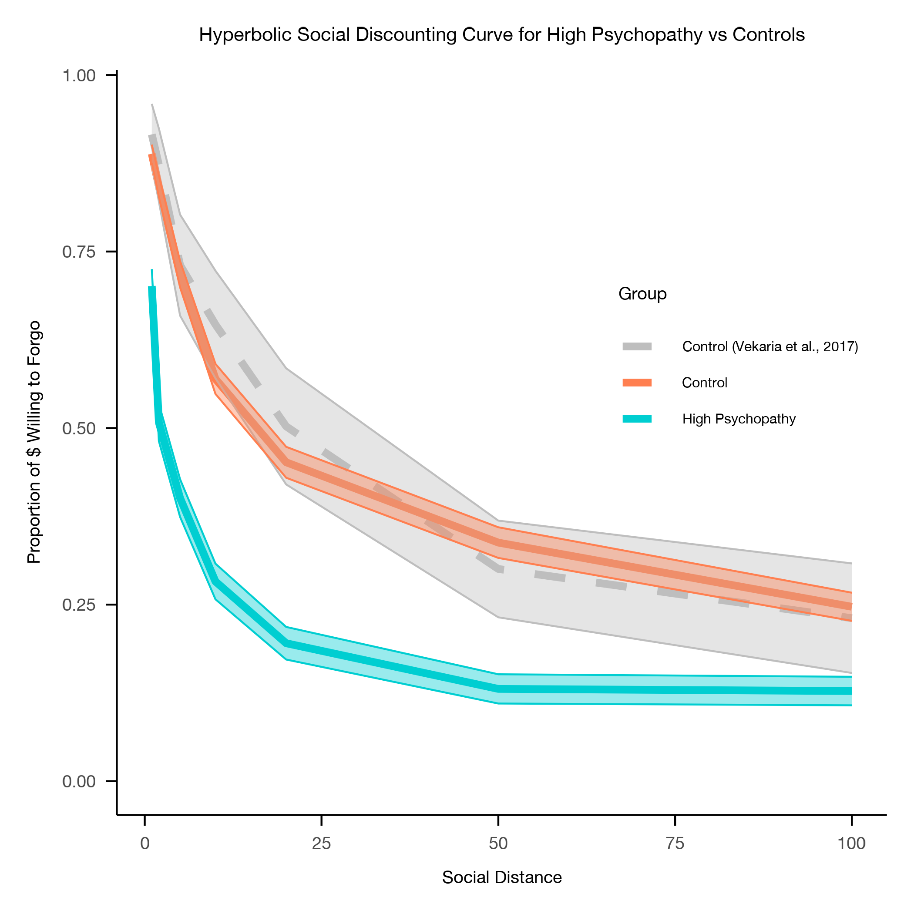

The Social Discounting Task Manual
Conceptual background, administration, and a step-by-step guide for data cleaning and analysis of the Social Discounting Task and the Social Discounting Task Short Form.
General Remarks
This manual provides conceptual background on the purpose of the Social Discounting Task (Jones & Rachlin, 2006, 2009), a description of how the task is administered, and a step-by-step guide for data cleaning and analysis. In addition to the original Social Discounting Task, this manual includes background information, data preparation procedures, and analytic steps for the Social Discounting Task Short Form (Amormino et al., 2025, 2026).
This manual is designed to be used alongside the accompanying R Markdown script, which walks users through the full data processing pipeline for both versions of the task. The repository also includes downloadable Qualtrics survey templates for the original Social Discounting Task and the Social Discounting Task Short Form, allowing researchers to easily implement the measures. These Qualtrics survey templates can be uploaded into Qualtrics and already contain the correct item and question names that correspond with the R Markdown Script. Altogether, these materials are intended to support transparent, reproducible use of social discounting paradigms in behavioral research.
Introduction
The Social Discounting task was originally developed by Jones and Rachlin (Jones & Rachlin, 2006) as a behavioral measure of how individuals value the welfare of others as a function of social distance. In this paradigm, participants make decisions about allocating monetary rewards between themselves and another person who varies in closeness to them, or social distance.
Conceptually, social discounting is closely related to temporal discounting, which examines how people devalue rewards that occur in the future compared to immediate rewards. In contrast, social discounting examines how individuals discount the subjective value of resources as a function of the social distance of the person the resources are shared with. The task, therefore, provides a behavioral index of generosity and the valuation of others' outcomes.
The Social Discounting Task has been used by many researchers examining the relationship between social valuation and prosocial behavior (Amormino et al., 2025), individual differences in personality and antisocial traits (Malesza & Kalinowski, 2021; Nero et al., 2025; Romanowich et al., 2021; Sharp et al., 2012), social relationships and perceived closeness (Rhoads et al., 2023; Sherman & Lynam, 2017).
This manual provides guidance for implementing and analyzing two versions of the measure:
- The Original Social Discounting Task (Jones & Rachlin, 2006)
- The Social Discounting Task Short Form (Amormino et al., 2025), which was developed to provide a shorter, more efficient version of the task
The Measures
The Original Social Discounting Task
The Social Discounting Task asks participants to imagine a list of 100 people, with position #1 being the person closest to them and position #100 being a stranger. Participants are then asked to provide the name and relationship of real individuals they know who correspond to seven specific social distances (N = 1, 2, 5, 10, 20, 50, and 100).
For each of the seven names provided (corresponding to seven social distances), participants make a series of nine dichotomous choices (Figure 1 from Nero et al., 2025). In each choice, participants can select a selfish option, in which they keep money for themselves, or a generous option, in which money is shared with the person at the specified social distance. For each social distance, the selfish option begins with the participant keeping $155, and the amount decreases by $10 across nine decisions, ending with the option to keep $75. Alternatively, participants may choose the generous option of splitting $150 with the social distance. Thus, across the decision sequence, participants choose between keeping a progressively smaller amount for themselves or opting for a consistent equal split with the other person at the specified social distance.
These choices allow for the calculation of the "indifference point", defined as the point at which participants switch from choosing the selfish option to choosing the generous option. From this indifference point, the maximum amount of money the individual is willing to forgo for that social distance is generated by subtracting $75 from the indifference point for each block for each participant. For example, if someone switched from being selfish to being generous at the second trial when offered to keep $145 or split $150, the participant has sacrificed $70 ($145 - $75), representing the maximum amount willing to forgo. This results in 7 "maximum amount willing to forgo", one for each social distance, for each participant. These seven values are later used to estimate the social discounting function using a hyperbolic model (see Data analysis section).
For participants who choose the selfish option for all the trials for the social distance, the indifference point is assumed at the final trial ($75) and the amount willing to forgo is $0. For participants who chose the generous option for all trials in the block, the indifference point is assumed at the first trial ($155) and the amount willing to forgo is $80.
Social Discounting Task Short Form
Although the original Social Discounting Task has produced robust findings (Amormino et al., 2025), completing the task requires answering 9 questions for each of 7 social distances (63 questions total). The Social Discounting Short Form was therefore developed to provide a more efficient version of the measure.
Participants are still instructed to imagine a list of 100 people and then provide the names and relationships corresponding to seven social distances (N = 1, 2, 5, 10, 20, 50, 100). However, rather than making 9 decisions per social distance, participants make a single decision for each distance. This reduces the total number of decisions from 63 to 7 and shortens completion time. For each social distance, participants decide how to split $10 between themselves and the social distance. Response options range from keeping all $10 and giving $0 to the other person, to giving the full $10 to the other person. Importantly, unlike the original Social Discounting Task, participants have the option to give more to the other person than they keep for themselves. From these seven decisions, the maximum amount willing to forgo is calculated as $10 – the amount kept for each social distance. These values are then used to estimate the hyperbolic social discounting function.
Modeling Social Discounting: The Hyperbolic Function (logk and AUC)
Social discounting is typically modeled using a hyperbolic discounting function, which describes how the value assigned to another person decreases as social distance increases. The hyperbolic model is defined as:
Where:
- V = amount willing to forgo at a given social distance
- V₀ = model-implied intercept representing baseline generosity (i.e., predicted value at N = 0)
- k = the social discounting rate
- N = social distance
V₀ represents the intercept, or the amount of money willing to forgo when N = 0. In this analysis pipeline, social distances begin at N = 1. As a result, V₀ is not directly observed in the data but is instead estimated as the extrapolated intercept of the fitted hyperbolic function. The parameter k reflects how steeply generosity declines as social distance increases, or how steeply the value assigned to others declines as social distance increases. Higher k values indicate steeper discounting, while lower k values indicate shallower discounting. Because k is constrained to be positive and is often highly skewed, it is typically estimated on the log scale and reported as logk. In the model implementation used here, logk is estimated and then exponentiated (i.e., k = exp(logk)) to ensure that k remains positive.
When interpreting logk, a more negative logk indicates shallower social discounting (greater generosity across social distances), while a more positive logk indicates steeper social discounting (generosity declining more quickly with distance).
The accompanying R Markdown script demonstrates how to estimate logk for each participant using the indifference points and the maximum amount willing to forgo.
In addition to estimating the hyperbolic discounting parameter k, researchers often compute the Area under the curve (AUC). AUC is a model-free measure of social discounting and represents the overall generosity across all social distances. This is calculated by plotting the amount willing to forgo at each social distance and computing the total area under the resulting discounting curve. AUC values range from 0 to 1 with higher AUC values indicating greater generosity (shallower discounting) and lower AUC values indicating less generosity (steeper discounting).
Both logk and AUC capture the same underlying social discounting construct, with logk being model-based and AUC being model-free. Additionally, logk represents the rate at which social valuation changes with social distance, while AUC represents overall social valuation across all social distances.
Data Collection
In this repository, we provide two mechanisms for collecting data for both the Original Social Discounting Task and the Social Discounting Task Short Form that can be used with the provided R Markdown Analysis scripts: (1) Qualtrics survey templates and (2) R-based Shiny applications. This manual corresponds to the Qualtrics Templates and Shiny Applications Version 1.0.0, and the R Markdown script Version 2.0.0.
Qualtrics Templates
We provide downloadable Qualtrics survey templates for both versions of the task. These templates are pre-formatted with the correct item structure and variable names, allowing for straightforward implementation. Once uploaded into Qualtrics, the surveys can be used without further modification, and response data will align directly with the accompanying analysis scripts provided in this repository.
Shiny Applications
We also provide R code to run custom Shiny applications for both the Original Social Discounting Task and the Short Form.
The Shiny applications are interactive web-based implementations of the task developed in R using the Shiny framework. They are designed to standardize task presentation, automate progression through the task, and directly record participant responses in a structured format that corresponds with the analysis scripts.
To run the applications locally, users should open the corresponding R script in RStudio and click "Run App" (or execute shiny::runApp() from the console). This will launch the application in a web browser window where participants can complete the task.
Each application guides participants through the full task sequence, including:
- Entry of a participant identifier by the researcher
- Instruction screens
- Entry of social distance names and relationships
- Decision-making trials for each social distance condition
Upon completion, the application automatically exports a .csv file containing participant responses in wide format that can be combined with those from other participants and then used in the analysis scripts.
Together, these tools provide flexible options for both traditional survey-based implementation (Qualtrics) and fully programmatic, locally hosted data collection (Shiny).
Data Preparation
Up to this point, we have described the conceptual basis of the Social Discounting Task, the two task versions, and how social discounting is modeled using hyperbolic functions to generate logk or AUC. The following sections describe tips for preparing, cleaning, and analyzing social discounting data. The procedures are based on the outputs from the Qualtrics templates or Shiny Apps, using R Markdown scripts provided with this manual, but steps can be modified or adapted for datasets collected using other survey formats.
This section covers:
- Overview of expected data structure
- Data Cleaning procedures and quality checks
- Calculation of indifference points and maximum amount willing to forgo
- Hyperbolic Model (and comparison to exponential and linear models)
- Extraction of logk and AUC
Data Overview
This subsection describes the expected data structure and variable naming required by the R Markdown data cleaning and analysis scripts. Using the provided Qualtrics templates or Shiny Apps ensures the correct structure automatically, but if you create your own survey, following these conventions is necessary for the scripts to work properly.
- CSV Format: Export from Qualtrics as a CSV file with response values, not labels. Qualtrics CSV exports include two extra rows below the variable names (the question text and an import ID row). The R script removes these rows automatically and converts the participant ID and response columns to numeric values, so the file can be used as exported.
- Subject Identifier: column
subnumshould contain unique participant IDs. Participants without a value insubnumwill be removed during data cleaning.
Note: The Qualtrics templates have a question where a participant ID can be entered in manually; however, Qualtrics can also randomly generate participant IDs (added in the survey flow) or embed IDs into the survey link.
Social Discounting Task: Trial Naming and Variables
Trials from the original social discounting task follow the naming convention: sd[distance]_[trial], where
- distance is social distance (1, 2, 5, 10, 20, 50, 100)
- trial is the trial number within that social discounting block (1-9)
The outline of the trial variable names is below:
| Social Distance | Trial Variables |
|---|---|
| 1 | sd1_1 – sd1_9 |
| 2 | sd2_1 – sd2_9 |
| 5 | sd5_1 – sd5_9 |
| 10 | sd10_1 – sd10_9 |
| 20 | sd20_1 – sd20_9 |
| 50 | sd50_1 – sd50_9 |
| 100 | sd100_1 – sd100_9 |
Response coding
Responses are recoded in Qualtrics. For trials 1-8, 0 indicates the participant kept the larger sum of money for themselves, while positive values (10-80) indicate the participant shared the money, choosing the $75/75 split. These positive values are calculated by subtracting 75 from the amount offered to keep for themselves, generating the amount willing to forgo for that trial (ex: $155 for you, or give $75 and keep $75 is recoded to 80). For Trial 9 (keep $75 for yourself, or give $75 to N and keep $75), -5 indicates the participant kept the money, and 0 indicates they shared money. These recoded values are used to calculate the indifference point in R and the maximum amount willing to forgo.
Social Discounting Task Short Form: Trial Naming and Variables
Trials from the social discounting task short form follow the naming convention:
[block number]_SDshort_decision, where:
- block number is social distance (block 1 = N1, block 2 = N2, block 3 = N5, block 4 = N10, block 5 = N20, block 6 = N50, block 7 = N100)
When the file is read into R, an X is added to the start of each variable name (e.g., 1_SDshort_decision becomes X1_SDshort_decision) because R variable names cannot start with a number. The R script uses these X-prefixed names.
Response coding
Responses are recoded in Qualtrics and each social distance has one response value. Response options are recoded to reflect the amount given to the N for that choice (ex: keep $10 and give $0 is recoded to be 0).
Cleaning and Calculation of Maximum Willing to Forgo
Social Discounting Task
Using the answer choices in Qualtrics with the recoded values, the following steps describe the data cleaning procedures to calculate participant-level indifference points and the maximum amount willing to forgo.
- Reshape Data (wide to long)
Raw Qualtrics exports contain each trial as a separate column (e.g.,
sd1_1,sd10_5). To facilitate trial-level processing, the data are converted from wide format to long format. In the long format, each row corresponds to a single trial observation, such that the participant identifier (subnum) is repeated for the total number of trials. After reshaping, thetrialcolumn contains the item or trial name (e.g.,sd1_1) and thechoicecolumn contains the participant's response. - Split trial information
Each trial name contains two pieces of information: social distance (
sd1,sd2) and the trial number within the distance block. These are split into separate columns (distanceandamount1).
Reference Table for Amounts Offered to Keep
| Trial Number | Amount Offered |
|---|---|
| 1 | 155 |
| 2 | 145 |
| 3 | 135 |
| 4 | 125 |
| 5 | 115 |
| 6 | 105 |
| 7 | 95 |
| 8 | 85 |
| 9 | 75 |
- Quality Check
Before indifference points are calculated, the R script checks each participant at each social distance for missing or inconsistent responses. Each response is recoded as kept (0) or shared (1), and two values are counted:
n_trials, the number of valid responses (should be 9), andn_switches, the number of times the participant changes between keeping and sharing (0 = always kept or always shared, 1 = the expected single switch, 2 or more = inconsistent responding). The script lists any participant and social distance with fewer than 9 valid trials or more than one switch. If nothing is listed, the data are complete and consistent. Flagged cases should be inspected before continuing. Researchers can keep them, exclude them, or use the logistic regression approach described in Alternative Estimation Approach for Missing Data. We recommend reporting the number of flagged participants in the Methods section. - Recode Choice Values
As previously described, most trials are coded in Qualtrics as 0 = participant kept the money and a positive value (10-80) = participant shared the money. Trial 9 (final trial) uses -5 = participant kept the money and 0 = participant shared the money. To simplify the calculation of the crossover point, -5 is temporarily recoded to 5. This ensures that participants who keep money on all trials are correctly identified as having their maximum willing to forgo at the last trial.
- Remove Invalid/Missing Responses
Ideally for datasets with minimal missingness, rows with missing responses are removed. Only rows with
choicegreater than or equal to 0 are retained (after recoding -5 to 5). This ensures that only valid trials are considered when calculating indifference points. - Convert Social Distance Labels to Numeric
Distance labels (
sd1,sd2, etc) are converted to numeric values (1, 2, etc) in a new column calledDistance. Any label that does not match one of the seven social distances is set to missing (NA) rather than to a number, so it cannot enter the model as a real social distance. - Compute Indifference Points and Maximum Amount Willing to Forgo
For each participant and social distance, we first identify the maximum choice for that distance. This represents the crossover point where the participant switched from keeping money. This will either be a switch from a positive number (10-80) to 0, or a switch from 0 to 5 (if the participant kept the money for all of the trials). The maximum choice value for that distance is stored in a new column called
max_rating. Any temporary 5 values are converted back to -5 to distinguish participants who kept money on all trials. The output is a dataframe calledtrial_filtered_datawhich contains one row per participant per social distance, with the value undermax_ratingrepresenting the maximum amount willing to forgo. This cleaned dataset is ready for estimating hyperbolic discounting parameters (logk) or AUC in subsequent analysis steps.
Note: Alternative methods exist for participants who switch back and forth multiple times, but this approach uses the first crossover to standardize calculations. The Quality Check step identifies participants who switch more than once so they can be inspected or reported.
Social Discounting Task Short Form
Data cleaning for the Social Discounting Task Short form is more straightforward than the original task because participants make only one decision per social distance, reducing the total number of trials from 63 to 7 and eliminating the need to calculate the indifference point. The following steps describe how to convert raw Qualtrics exports to generate participant-level maximum amount willing to forgo for each social distance.
- Reshape Data (wide to long)
Raw exports contain one column per social distance decision (e.g.,
X1_SDshort_decision). To facilitate trial-level processing, the data are converted from wide format to long format. In the long format, each row corresponds to a single decision for a single participant. After reshapingtrialcolumn contains the trial name, and themax_ratingcolumn contains the participant's response for that social distance. - Split trial information
The social distance label (e.g.,
X1) is taken from the trial name and stored in a new column calleddistance. - Remove Invalid/Missing Responses
Ideally for datasets with minimal missingness, rows with missing responses are removed. Only rows with
max_ratingbetween 0 and 10 are retained. - Convert Social Distance Labels to Numeric
The social distance labels (
X1toX7) are converted to numeric values:
| Label | Distance |
|---|---|
X1 | 1 |
X2 | 2 |
X3 | 5 |
X4 | 10 |
X5 | 20 |
X6 | 50 |
X7 | 100 |
This numeric Distance column is required for estimating hyperbolic discounting parameters (logk) or AUC. As in the long form, any label that does not match one of the seven social distances is set to missing (NA).
- Maximum Amount Willing to Forgo
In the Short Form, each decision directly represents the amount the participant is willing to give to the N. Therefore, there is no need to calculate a crossover point like in the original task. The
max_ratingcolumn is then equivalent to the maximum amount willing to forgo for that social distance.
Alternative Estimation Approach for Missing Data
This is only used in the long-form task, where the indifference point needs to be estimated from multiple decisions within each social distance. In contrast, the short-form task includes only one decision per social distance, meaning the indifference point is directly observed.
When to use this approach:
- Datasets with missing trial-level responses (e.g., neuroimaging or large-scale online studies)
- When the crossover-based method is not appropriate due to incomplete choice sequences
In these cases, the standard crossover-based method for estimating indifference points may not be appropriate, as it relies on observing a complete sequence of choices within each social distance.
To address this, indifference points can alternatively be estimated using a trial-level logistic regression approach, which uses all available observed trials without requiring complete data.
Specifically, we model the probability of choosing to share (coded as 1; keep = 0) as a function of the amount of money forgone on each trial. The logistic regression model is defined as:
logit(P(share)) = β₀ + β₁ × amount_forgone
Here, amount_forgone represents the monetary cost associated with choosing to share, ranging from $80 to $0 across trials. The model estimates how the probability of sharing changes as a function of increasing monetary cost by fitting a continuous logistic choice function across this range of observed values.
Rather than identifying a discrete switching point in the observed data, the model describes a smooth decision curve over the range of possible forgone amounts.
The indifference point is defined as the value of amount_forgone at which the predicted probability of sharing equals 0.5. This represents the point of equal likelihood between keeping and sharing and can be interpreted as the participant's maximum willingness to forgo monetary reward at a given social distance.
At this point, the logit equals zero, and the indifference point can be derived analytically as:
Indifference Point = −β₀ / β₁
Note. Participants with no variability in responses (i.e., always choosing to keep or always choosing to share) are assigned boundary values corresponding to the limits of the task, as logistic regression cannot be reliably estimated in the absence of response variability. Additionally, indifference points are not estimated for participant–distance combinations with fewer than three valid responses, as such cases do not provide sufficient information for stable model fitting.
This approach yields participant- and distance-specific estimates that can be used in subsequent analyses, such as estimating hyperbolic discounting parameters (log(k)) or area under the curve (AUC).
Note that these estimates are not identical to those from the crossover method. For a participant who switches once, the logistic estimate falls midway between the last amount kept and the first amount shared (e.g., 65 rather than 60). Participants who always kept the money are assigned 0 rather than −5. Use one method consistently within a dataset, and do not combine or directly compare estimates from the two methods.
Hyperbolic Model
After computing the maximum amount willing to forgo for each participant and social distance, the next step is to estimate the hyperbolic discounting function using nonlinear mixed-effects modeling. A nonlinear mixed-effects model (NLME) is a statistical approach used to estimate nonlinear relationships while accounting for both:
- Fixed effects (overall average v0 and logk)
- Random effects (participant-specific deviations in v0 and logk, corresponding to random intercepts and random effects on the discounting parameter)
This allows estimation of individual level discounting parameters while accounting for repeated observations across social distances. The provided R script uses the nlme package to implement the hyperbolic model.
Choosing starting values. Nonlinear mixed-effects models are estimated iteratively, starting from initial guesses (starting values) for each parameter. If the starting values are far from the final estimates, the model can fail to converge or settle on a poorer solution. Rather than requiring users to try starting values by hand, the R script defines a function, fit_best_start(), in the Model Fitting Functions section near the top of the script. This function fits the model once for every combination of starting values in a grid (start_grid), skips any combination that fails to converge, and keeps the converged model with the highest log-likelihood (the best-fitting solution). It also prints how many of the starting values converged. All nlme models in the script use this function and the same control settings (ctl), which allow more iterations than the nlme defaults.
A table of every starting value tried, and the estimates each one reached, is saved with the model and can be viewed with attr(model, "start_search"). If the converged fits reach the same log-likelihood and the same estimates, the solution is stable and does not depend on the starting values. If they reach different estimates with similar log-likelihoods, the model may be poorly identified and should be simplified. If only a few starting values converge, results should be interpreted with caution.
1. Base Model (No Predictors)
The base model estimates the hyperbolic function without including predictors/covariates and is used to obtain participant-level logk values.
Researchers should typically:
- Run this base model first
- Extract individual logk values
- Use those values in subsequent analyses (e.g., regression models)
Key components:
v0 / (1 + exp(logk) * Distance)→ hyperbolic functionexp(logk)→ ensures the discounting parameter (k) is positiverandom = v0 + logk ~ 1 | subnum→ estimates individual-level parametersstart_gridandfit_best_start()→ try a grid of starting values for v0 and logk and keep the best-fitting model that converges
2. Alternative Models (Optional but Recommended)
Although the hyperbolic model is standard in social discounting research, it is good practice to compare it with alternative models. Here we compare it to an exponential and linear model. The exponential model assumes a constant rate of decline and the linear model assumes a straight-line decrease. Like the hyperbolic model, the exponential model (v0 × exp(−exp(logk) × N)) is estimated with logk so that k stays positive, and its starting values are also selected with fit_best_start(). Its logk is not on the same scale as the hyperbolic logk because k plays a different role in the two equations, so the two should not be compared directly. Because the linear model (v0 + k × N) is not nonlinear, it is fit with the lme() function, which does not require starting values. It is estimated with maximum likelihood (method = "ML") so that its AIC can be compared with the nlme models.
To evaluate which model best fits the data, we compare models using Akaike's Information Criterion (AIC). AIC balances model fit and model complexity, with lower AIC values indicating better-fitting models. The R script produces two model comparison tables. The first, created with the aic_table() function, reports for each model the number of parameters (K), the log-likelihood, AICc (AIC corrected for sample size), ΔAICc, AICc weights, and cumulative weights. The second table reports AIC weights calculated directly from each model's AIC. With large samples, AIC and AICc are nearly identical and lead to the same conclusions, and the interpretation guidelines below apply to both.
Delta AIC (ΔAIC): ΔAIC represents how much worse a model fits relative to the best-fitting model (i.e., the model with the lowest AIC). It is calculated by subtracting the lowest AIC value across all candidate models from the AIC of each model. In most cases, the hyperbolic model will have the lowest AIC, meaning that the exponential and linear models will have positive ΔAIC values relative to the hyperbolic model. In this case, subtract AIC from hyperbolic model from that of exponential or linear model:
AIC Weights: AIC weights represent the relative likelihood that each model is the best among the candidate models. Each model is assigned an AIC weight with values ranging from 0 to 1 and all weights summing to 1. The model with a high AIC weight (close to 1) has strong support.
3. Predictor Model
In addition to estimating participant-level discounting parameters, researchers may wish to examine whether individual differences (e.g., demographic variables, personality traits, or group membership) predict variability in the social discounting function. This predictor model extends the base hyperbolic model by including predictors/covariates on the discounting rate parameter (logk). Therefore, predictors explain between-person differences in how steeply generosity declines across social distances. Positive coefficients indicate steeper discounting (less generosity) whereas negative coefficients indicate shallower discounting (greater generosity)
Tips for using this model:
- Make sure you modify predictors to match variables available in your dataset
- Predictors included in the fixed effects list (
logk ~) model individual differences in discounting rate, not baseline generosity (v0) - Set
n_extrainfit_best_start()to the number of predictors in the model. The starting values for the predictor slopes are set to 0, so they do not need to be specified by hand. - In the linear comparison model (fit with
lme()), predictors of the discounting rate are written as interactions with Distance (e.g.,Distance:predictor), so that the predictors affect the rate of decline, as in the hyperbolic and exponential models.
Common Issues and Troubleshooting
When fitting nonlinear mixed-effects models, convergence issues are relatively common. Singularity and non-convergence errors are often related and can arise from similar underlying issues (e.g., poor starting values, overly complex models, or limited variability in the data).
1. Singularity Error
Example Error:

This indicates that the model has reached an unstable or undefined solution during estimation. This can occur due to numerical issues (e.g., poor starting values) or because the model is too complex relative to the data.
2. Non-Convergence (Maximum Iterations Reached)
Example Error:

This means the model failed to find stable parameter estimates within the allowed number of iterations.
Both errors typically arise from one or more of the following:
- Poor starting values for model parameters (v0, logk)
- Overly complex random effects structure (e.g., random slopes for logk)
- Limited variability in participant responses (e.g., always choosing 0 or maximum)
- Too few observations per participant (especially in the Short Form)
- Predictors on very different scales (in predictor models)
The following steps can be used to resolve most convergence issues:
- Widen the starting value grid:
fit_best_start()automatically tries every combination of starting values instart_grid. If no starting values converge, add values to the grid (e.g., v0 near the meanmax_ratingand a wider range of logk values). Checkattr(model, "start_search")to see which starting values converged and whether they reached the same estimates. - Iteration limits: increase
msMaxIter,maxIter, orpnlsMaxIterin the shared control settings (ctl) defined in the Model Fitting Functions section of the script. - Simplifying random effects: consider reducing model complexity by removing random effects (e.g., only allowing random intercepts), rather than estimating both participant-specific v0 and logk simultaneously
Extraction of logk and AUC
Once the hyperbolic model has been fitted to the cleaned social discounting data, the next step is to extract participant-level estimates of social discounting. Two commonly reported metrics are:
- logk – the model-based social discounting rate
- AUC (Area Under the Curve) – a model-free measure of overall generosity
The procedures for extracting these metrics are the same for both the original Social Discounting Task and the Short Form.
1. Extracting Individual logk Values
The hyperbolic model estimates two types of parameters:
- Fixed effects: population-average estimates of v0 (baseline generosity) and logk (discounting rate)
- Random effects: participant-level deviations from these averages
To obtain participant-specific logk values:
Each participant's logk is the fixed effect (the population-average logk) plus that participant's random effect (how far their logk is from the population average). The coef() function performs this addition and returns one row per participant with that participant's estimated v0 and logk. Participant IDs are taken from the row names of the coef() output and converted back to the same type as subnum in the data (e.g., numeric), so the logk values can be merged with other variables. The result is a dataset (individual_logk_df_base) with one row per participant, containing the participant ID and estimated logk. Because each logk value is labeled with the participant ID it belongs to, it cannot be matched to the wrong participant, even if participants have missing social distances or the data are sorted differently. These values represent individual discounting rates, derived directly from observed behavior rather than from predictors. They can then be used in downstream analyses such as correlations, regressions, or group comparisons.
For the optional predictor model, each participant's logk also depends on their predictor values. It equals the participant-specific intercept (the fixed intercept plus the participant's random effect) plus each fixed slope multiplied by the participant's value on that predictor. The script computes this using coef() and a matrix of each participant's predictor values. The predictors in this matrix must match those in the predictor model, in the same order.
2. Extracting Area Under the Curve (AUC)
AUC provides a model-free measure of overall generosity:
- For each participant, the amount willing to forgo is plotted across all social distances (1, 2, 5, 10, 20, 50, 100).
- The area under this curve is calculated using numerical integration (trapezoidal method) which treats each pair of adjacent points (amount willing to forgo for two social distances) as a trapezoid. For each interval, the area is computed as: (difference in social distance) x (average of adjacent willingness-to-forgo values). The segment-wise areas are then summed to produce a single raw AUC value per participant
- The resulting raw AUC value is then normalized by the maximum possible area to yield a standardized AUC value bounded between 0 and 1. The normalization is defined as: (Maximum N – Minimum N) x maximum possible amount to forgo. This reflects the total span of the observed social distance axis (i.e., 100 − 1 = 99), over which the trapezoidal integration is performed.
- For the Original Social Discounting Task this is 99 * 80
- For the Social Discounting Short Form this is 99 * 10
- Higher AUC values indicate greater generosity and shallower social discounting, and lower AUC values indicate steeper discounting
Unlike logk, AUC does not rely on fitting a specific model and provides a complementary perspective on overall social valuation across distances.
Summary
By extracting logk and AUC:
- logk captures how rapidly generosity declines with social distance (model-based)
- AUC captures overall generosity across social distances (model-free)
Both metrics are useful for individual differences analyses, allowing researchers to relate social discounting behavior to personality traits, demographic variables, or other outcomes.
Visualization
Visualizing participants' generosity across social distance provides an intuitive representation of social discounting behavior. The plot shows the proportion of the maximum amount participants are willing to forgo at each social distance.
Key features of the visualization:
- Scaling
- Values are expressed as a proportion of the maximum possible amount (percentage).
- This ensures that curves are directly comparable across participants, groups, and task versions.
- Group Comparisons (Optional)
- If a grouping variable (e.g., experimental condition or demographic group), named
Group_varand coded 1 and 2, is present, separate curves are plotted for each group. - Shaded ribbons represent ±1 standard error of the mean, providing a visual sense of variability within each group.
- If a grouping variable (e.g., experimental condition or demographic group), named
- Single Curve (No Groups)
- If no grouping variable is present, a single curve is plotted with a shaded ribbon representing ±1 standard error across all participants.
- Interpretation
- Steeper declines in the curve reflect steeper social discounting (participants give less as social distance increases).
- Flatter curves indicate shallower discounting (participants maintain generosity across social distances).
- The curve can also be compared visually to individual or group-level logk estimates.
This visualization is useful both for descriptive reporting and for checking whether the hyperbolic model captures the overall pattern of generosity in the sample.

References
Amormino, P., Gao, J., Li, P., Induni, S., Amar, S., Balabanis, K., Burt, A., Dockray, K., Doherty, H., Dube, N., Janney, L., Kales, E., King, I., Kronthal, E., Lee, B., Regan, E., Romero, I., Jones, B. A., Seaman, K. L., & Marsh, A. A. (2025). Social discounting and anti-/pro-sociality: A meta-analysis and (short-form) replication. Personality and Individual Differences, 247, 113447. https://doi.org/10.1016/j.paid.2025.113447
Amormino, P., Graue, A. E., Marsh, A. A., & Wilson, A. V. (2026). Development and Validation of the Social Discounting Task: Short Form. Social Psychological and Personality Science, 17(4), 536–543. https://doi.org/10.1177/19485506251328706
Jones, B., & Rachlin, H. (2006). Social Discounting. Psychological Science, 17(4), 283–286. https://doi.org/10.1111/j.1467-9280.2006.01699.x
Jones, B., & Rachlin, H. (2009). Delay, Probability, and Social Discounting in A Public Goods Game. Journal of the Experimental Analysis of Behavior, 91(1), 61–73. https://doi.org/10.1901/jeab.2009.91-61
Malesza, M., & Kalinowski, K. (2021). Willingness to share, impulsivity and the Dark Triad traits. Current Psychology, 40(8), 3888–3896. https://doi.org/10.1007/s12144-019-00351-5
Nero, N., Dressel, M., Amormino, P., Freeburg, P., Somers, M., Poplinski, L., Duhamel, K., Alvarez-Toro, V., & Marsh, A. A. (2025). Adults with more severe psychopathy in the community show increased social discounting. Communications Psychology, 3(1), 175. https://doi.org/10.1038/s44271-025-00353-z
Rhoads, S. A., O’Connell, K., Berluti, K., Ploe, M. L., Elizabeth, H. S., Amormino, P., Li, J. L., Dutton, M. A., VanMeter, A. S., & Marsh, A. A. (2023). Neural responses underlying extraordinary altruists’ generosity for socially distant others. PNAS Nexus, 2(7). https://doi.org/10.1093/pnasnexus/pgad199
Romanowich, P., Igaki, T., Yamagishi, N., & Norman, T. (2021). Differential Associations between Risky Cell-Phone Behaviors and Discounting Types. The Psychological Record, 71(2), 199–209. https://doi.org/10.1007/s40732-020-00446-7
Sherman, E. D., & Lynam, D. R. (2017). Psychopathy and low communion: An overlooked and underappreciated core feature. Personality Disorders: Theory, Research, and Treatment, 8(4), 309–318. https://doi.org/10.1037/per0000203
Vekaria, K. M., Brethel-Haurwitz, K. M., Cardinale, E. M., Stoycos, S. A., & Marsh, A. A. (2017). Social discounting and distance perceptions in costly altruism. Nature Human Behaviour, 1(5). https://doi.org/10.1038/s41562-017-0100